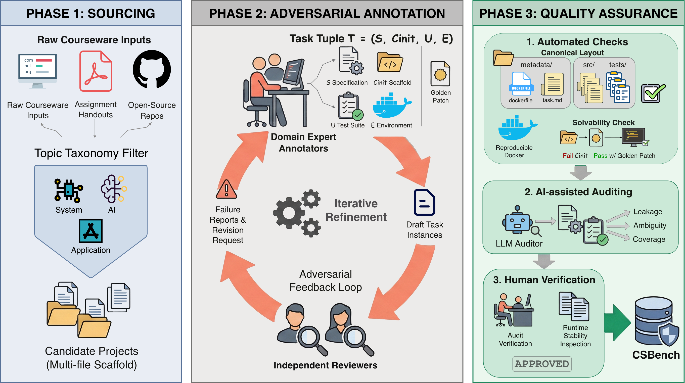

Benchmark Design
Each CSBench task is formally defined as a tuple T = (S, Cinit, U, E): a Specification, Initial Scaffold, Test Suite, and a containerized Environment. Given (S, Cinit), a model produces a completed implementation; a task is solved when all tests pass inside the Docker container.
Three-Stage Construction Pipeline
CSBench employs an adversarial, expert-in-the-loop workflow to transform heterogeneous courseware into standardized, execution-based benchmark tasks.
Sourcing
Candidate projects sourced from open-source CS courses at top-tier universities, organized by a comprehensive topic taxonomy (System, AI, Application, Others). Priority given to projects with non-trivial, multi-file starter scaffolds.
Annotation
Domain experts construct task artifacts with adversarial review: Annotators build scaffold code, specifications, and test suites; independent Reviewers audit outputs and iterate until strict criteria are met.
Quality Assurance
Three-layer verification: Automated checks (solvability, layout), AI-assisted auditing (leakage, ambiguity), and Human-in-the-loop decision (spec fidelity, runtime stability).

The three-stage construction pipeline of CSBench: Sourcing, Annotation, and Quality Assurance.
Statistic
Domain & Language Distribution
CSBench spans 4 high-level topics and 19 sub-topics, ensuring systematic domain representation. It covers Python (41%), C/C++ (39%), and other mainstream languages including Java, JavaScript, Go, Rust, and Assembly.
Course Topic Taxonomy
Programming Languages
Dataset Statistics Comparison
CSBench requires an order-of-magnitude more implementation effort (902 lines edited on average vs. 33 in SWE-Bench), reflecting genuine system construction complexity.
| Metric | Attribute | SWE-Bench | Multi-SWE-Bench | CSBench | |||
|---|---|---|---|---|---|---|---|
| Mean | Max | Mean | Max | Mean | Max | ||
| Task Specification | Length (words) | 195.1 | 4,477 | 550.6 | — | 676.2 | 5,693 |
| Initial Code | # Files (non-test) | 3,010 | 5,890 | 3,817.5 | — | 77.8 | 1,168 |
| # Lines (non-test) | 438K | 886K | 178.6K | — | 185K | 657K | |
| Gold Patch | # Lines edited | 32.8 | 5,888 | 163.3 | — | 902.3 | 25K |
| # Hunks edited | — | — | 11.7 | — | 28.1 | 1,530 | |
| # Files edited | 1.7 | 31 | 4.89 | — | 10.6 | 363 | |
| Test Suite | # Fail to Pass | 9.1 | 1,633 | 6.26 | — | 13.7 | 63 |
| # Total | 120.8 | 9,459 | 2,241.2 | — | 17.0 | 68 | |
Detailed Results
Detailed Performance by Topic (Representative Models)
Model performance is highly non-uniform across CS domains. Top models perform strongly on algorithmic and logic-heavy topics, but their success rates drop substantially on low-level system construction tasks such as operating systems, databases, and compilers.
| Topic | GPT-5.2 | Sonnet-4.5 | Gemini-3-Pro |
|---|---|---|---|
| System (48 tasks) | |||
| Operating System (12) | 37.50% | 45.83% | 27.08% |
| System Fundamentals (9) | 19.44% | 30.56% | 33.33% |
| System Security (8) | 56.25% | 43.75% | 56.25% |
| Computer Network (5) | 60.00% | 35.00% | 50.00% |
| Parallel & Distributed (5) | 20.00% | 20.00% | 45.00% |
| Computer Architecture (4) | 31.25% | 31.25% | 62.50% |
| Database System (4) | 31.25% | 0.00% | 43.75% |
| Compiler (1) | 25.00% | 0.00% | 0.00% |
| AI (28 tasks) | |||
| Deep Learning (13) | 71.15% | 46.15% | 36.54% |
| Machine Learning (9) | 94.44% | 72.22% | 36.11% |
| Introductory AI (4) | 37.50% | 31.25% | 12.50% |
| ML System (2) | 12.50% | 0.00% | 0.00% |
| Application (19 tasks) | |||
| Web Development (7) | 85.71% | 75.00% | 25.00% |
| Data Struct & Algo (4) | 93.75% | 81.25% | 50.00% |
| Programming Fundamentals (4) | 50.00% | 75.00% | 100.00% |
| Data Science (3) | 66.67% | 0.00% | 33.33% |
| Others (5 tasks) | |||
| Computer Graphics (3) | 58.33% | 100.00% | 50.00% |
| Mathematics (2) | 100.00% | 75.00% | 25.00% |
| Overall (100) | 56.00% | 45.50% | 39.00% |
Pass@k Analysis
Among the models shown, Pass@k metrics show GPT-5.2 maintains a steady lead in AI and Application categories, while Gemini-3-Pro demonstrates superior performance in the System category, consistently outperforming GPT-5.2 across all k values.
Pass@k performance of representative models across different task categories.